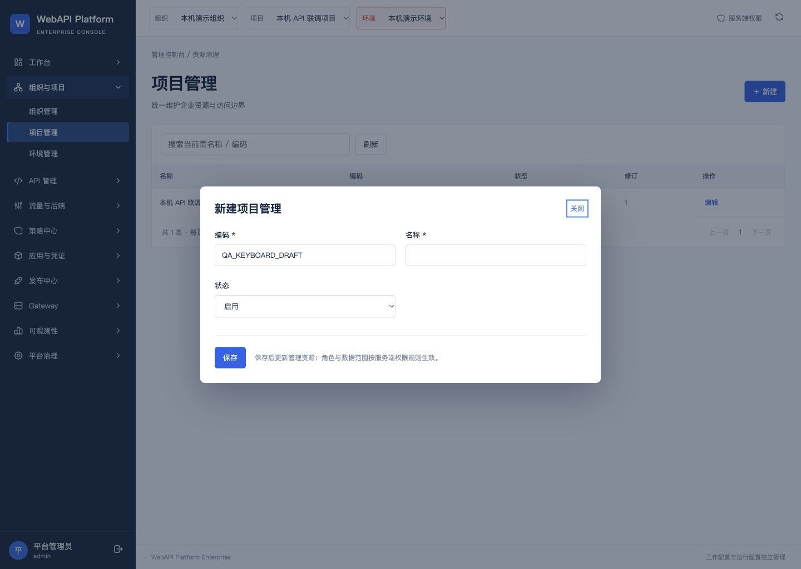
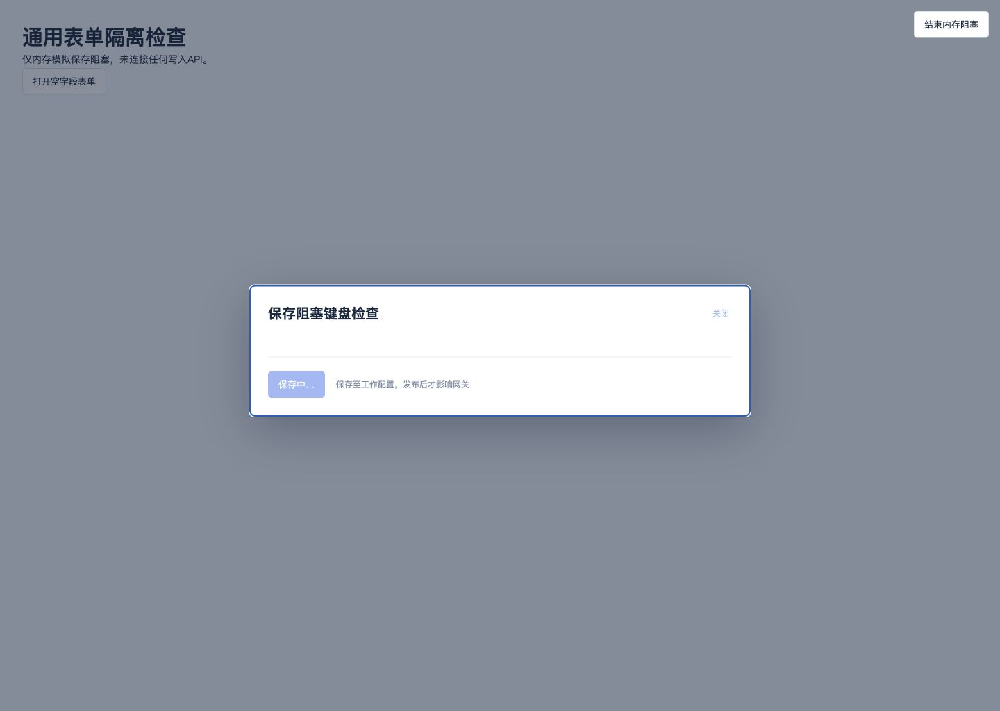

通用表单键盘交互修复验收
2026-10-06 · 独立工作树 · 1440px绿色检查
修复结果
取消“放弃修改”确认或按Escape返回草稿后，焦点恢复到编辑器；双向Tab保持在当前编辑器/确认区内。全部控件禁用时焦点停留在表单容器，失败后恢复可操作控件，关闭后返回触发按钮。原字段、权限、保存和412规则保持。
116/116完整前端测试 · 5项新增RED→GREEN · 12项浏览器检查 · TypeScript与Vite构建通过
本批代码尚未提交、合并或安装到4192。4192仍运行84ab385，双网关Ready、v4/seq4。检查预览已停止，0业务写请求转发，原账号、授权、凭据及33表保持。
验收回执 · 浏览器焦点检查 · 独立审查 · 5文件补丁 · 源码指纹console/src/ui.tsxconsole/src/editor-focus.mjsconsole/src/editor-focus.d.mtsconsole/tests/editor-focus.test.mjsconsole/tests/editor-view.test.mjs
实际项目表单：取消确认后焦点回到“关闭”按钮

真实组件仅内存检查：保存阻塞时表单容器持有焦点

验收边界与后续切换
实际页面检查只读代理4192；保存阻塞用真实Editor组件的内存promise模拟，未连接业务写API。纯决策/SSR测试不替代浏览器useEffect与键盘事件验证，两类证据分别记录。新Git archive应用补丁后5文件SHA读回通过。原本机443文件、29历史ZIP及上一批Scope升级包保持。
本批限定通用Editor，未验证全部独立弹窗或重新验收全部40页；不代表生产验收。后续升级范围限定上述5文件，本地固定提交、合并、平台/IdP冷备份及固定镜像升级4192；保留原账号、数据和本地修改，不推送。
原环境保留证明 · 补丁读回 · 中文结果